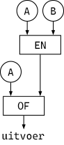
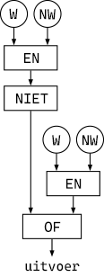
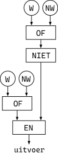
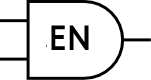
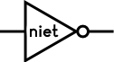
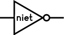
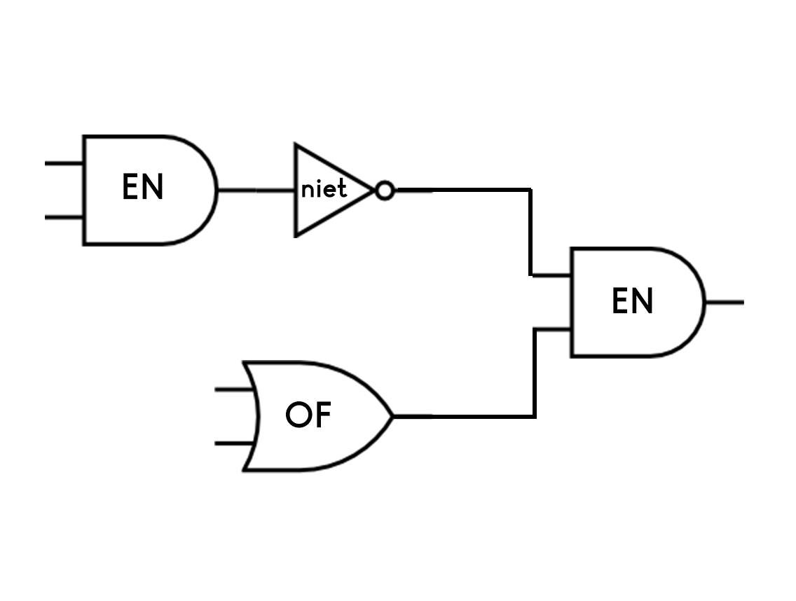

Het Digitale Domein: Logische Poorten
en,
of, en niet) weer bekijken en leren over hoe deze aan electronice circuits
relateren.
In een circuit met miljarden transistors, of zelfs duizenden transistors, kunnen hardwareontwerpers niet aan elke individuele transistor denken. Net zoals programmeurs abstractie gebruiken, gebruiken hardware-architecten abstracties, waarin een groep transistors en andere circuitelementen als één object worden beschouwd. Wat voor soort objecten? Er zijn in principe twee soorten, een voor geheugen en een voor berekening.
Geheugen bestaat uit flip-flops. Een flip-flop is een circuit met twee stabiele toestanden, aan en uit. Een invoersignaal kan aangeven dat het moet worden ingeschakeld, uitgeschakeld of gewijzigd, ongeacht de status. Zodra dat gebeurt, blijft de flip-flop in de nieuwe status totdat hij een ander signaal krijgt. Het heeft een uitvoer die zijn status weerspiegelt: aan als de flip-flop aan is, uit als hij uit is.
Boolean Functies
De circuits om berekeningen uit te voeren zijn interessanter. Ze berekenen functies, net als
rapporteurs in Snap!. Omdat computers veel rekenen, denk je misschien dat de basiscircuitfuncties
optellen, aftrekken, vermenigvuldigen en delen zijn, maar dat is niet het geval. Natuurlijk zijn
er circuits om die dingen te doen, maar ze zijn gemaakt van logische poorten: circuits die
Boolean functies berekenen: en , of en niet .
De reden dat Boolean functies als fundamenteel worden beschouwd, is dat hun invoeren en uitvoeren kunnen worden weergegeven met een enkele draad die het circuit in of uit gaat. Dat is niet zo voor rekenkundige functies. Als over een draad een spanning loopt, zeggen we dat er een waarde van 1 is, als er geen stroom over de draad loopt, is de waarde 0. Stel je wil met deze draden iets bouwen dat waardes kan optellen, dan je ervoor zorgen dat die opteller drie mogelijke uitvoerwaarden heeft, 0+0=0, 1+0=1 en 1+1=2. Als je daarentegen een spanning op een draad als Waar en geen spanning als Niet Waar beschouwt, dan kan de uitvoer van een Booleaanse functie van twee invoeren nog steeds alleen Waar of Niet Waar zijn, dus is slechts één uitvoerdraad nodig.
Je hebt een aantal voorbeelden gezien in Hoofdstuk 2 Les 3:
Keuzes maken met predikaten : EN, OF en NIET:

- Een circuitemulatie en waarheidstabel voor
en.Dit elektrische circuit toont een vereenvoudigde manier om de Boolean functie
enelektronisch te emuleren. De twee schakelaars bevinden zich in serie ; als beide schakelaars zijn ingeschakeld, stroomt de stroom en gaat de gloeilamp aan.Dit symbool in het diagram staat voor een batterij.

 Deze twee tabellen zijn identiek. De een laat het patroon zien met Waar/Niet Waar en de ander met enen en nullen.
Deze twee tabellen zijn identiek. De een laat het patroon zien met Waar/Niet Waar en de ander met enen en nullen.invoeren uitvoer A B A enBNiet Waar Niet Waar Niet Waar Niet Waar Waar Niet Waar Waar Niet Waar Niet Waar Waar Waar Waar invoeren uitvoer A B A enB0 0 0 0 1 0 1 0 0 1 1 1 - Een circuitemulatie en waarheidstabel voor
of.Dit elektrische circuit toont een vereenvoudigde manier om de Boolean functie
orelektronisch te emuleren. De twee schakelaars staan parallel; als een van de twee (of allebei) de schakelaars aan staan dan stroomt de stroom en gaat de gloeilamp aan.
Net als voor de
entabellen, zijn deze twee tabellen identiek behalve voor Waar/Nietwaar en enen en nullen.In normale taal betekent heeft het woord "of" twee betekenissen. Inclusieve of betekent "ten minste één van deze": Als het regent of koud is, heb je een jas nodig. (Als het regent en koud is dan heb je nog steeds een jas nodig). Exclusieve of betekent het een of het ander, maar niet allebei: Eet je groente of je krijgt geen toetje. (Het zou niet eerlijk zijn als je je groente at en nog steeds geen toetje kreeg.) In de informatica (en in wiskunde) betekent "of" op zichzelf altijd inclusieve of, zoals je kan zien in de waarheidstabel. Als je eigenlijk exclusieve of bedoelt, moet je dat zeggen.
invoeren uitvoer A B A ofBNiet Waar Niet Waar Niet Waar Niet Waar Waar Waar Waar Niet Waar Waar Waar Waar Waar invoeren uitvoer A B A ofB0 0 0 0 1 1 1 0 1 1 1 1 - Een circuitemulatie en waarheidstabel voor
niet.Dit elektrische circuit toont een vereenvoudigde manier om de Boolean functie
nietelektronisch te emuleren. De schakelaar is praktisch een circuitstopper: als de schakelaar aanstaat dan stroomt de stroom niet en staat de lamp uit als de schakelaar uitstaat dan stroomt de stroom naar de lamp en gaat de lamp aan.
Net als voor de andere tabellen, zijn deze twee tabellen identiek behalve voor Waar/Nietwaar en enen en nulleninvoer uitvoer A nietANiet Waar Waar Waar Niet Waar invoer uitvoer A nietA0 1 1 0
Logische poorten
In een computer worden Boolean functies geïmplementeerd in de fysieke circuits met behulp van logische poorten. (Één poort per functie) Logicacircuits worden vaak voorgesteld met tekeningen waarmee ingenieurs kunnen zien hoe de informatie door het circuit loopt. Het volgende diagram van een logicacircuit met twee poorten stelt de uitdrukking voor. Zie je hoe?
-
 Kijk naar het circuit hierboven, Met welke waardes voor A en B zal de uitvoer
Kijk naar het circuit hierboven, Met welke waardes voor A en B zal de uitvoer Waarzijn?
- Bekijk opnieuw
EN,OFenNIETbij de volgende vragen.Welke van de volgende uitdrukkingen zalWaarrapporteren?alleen IBekijk eerst elk onderdeel afzonderlijk en bepaal vervolgens wat het buitenste blok in elke uitdrukking zal rapporteren. In uitdrukking I: Wat rapporteert(Waar) en (Niet Waar)? Wat rapporteertniet ((Waar) en (Niet Waar))? In uitdrukking II: Wat rapporteert(Waar) of (Niet Waar)? Wat rapporteertniet ((Waar) of (Niet Waar))?alleen IICorrect!I en IIKijk nog een keer naar uitdrukking I. Wat rapporteertniet ((Waar) en (Niet Waar))(rechts) aan het buitensteen-blok?Geen van beideKijk nog een keer naar uitdrukking II. Wat rapporteert(Waar) en (Niet Waar)(rechts) aan het buitensteof-blok?Welke van de volgende circuits zalWaarrapporteren? (W staat voorWaaren NW staat voorNiet Waar.)- 
- 
alleen ICorrect!alleen IIProbeer de diagrammen in Snap! te bouwen net zoals in de vorige vraag.I and IIKijk nog eens naar diagram II. Welk signaal stuurt de rechterkant naar de EN-poort.Neither I nor IIKijk nog een keer naar diagram I. Welk signaal stuurt de linkerkant naar de OF-poort?

 
Ingenieurs teken het circuit rechts bijvoorbeeld op deze manier:

Zoek op afbeeldingen met de term "logic gate diagrams" voor meer voorbeelden.